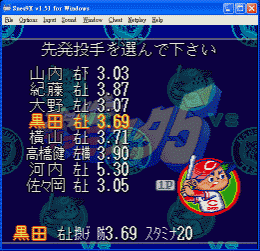
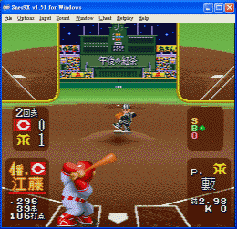
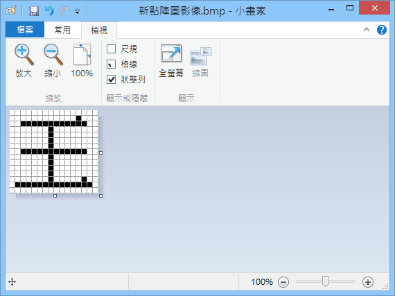

明星職棒 5
以前同事介紹 Super Famicom 的一款棒球遊戲《スーパーファミスタ 5》確實打起來簡單過癮，因此是我最常玩的棒球遊戲。
廣島東洋鯉魚魅力無限！！！
這是 1995 年的遊戲，當年的廣島隊打線令人熱血沸騰：
第一棒 左打 野村謙二郎 游擊手
第二棒 兩打 正田耕三 二壘手（姿勢修改成鈴木一朗打法）
第三棒 左打 前田智德 中外野手
第四棒 右打 江藤智 三壘手（姿勢修改成美式打法）
第五棒 左打 金本知憲 左外野手
第六棒 右打 緒方孝市 右外野手
第七棒 右打 西山秀二 捕手
第八棒 左打 浅井樹 一壘手（姿勢修改成王貞治打法）
投手陣容也算可以，先發有大野豊、紀藤真琴，中繼有高橋健，救援交給佐々岡真司。只要自創球員補上黑田博樹、横山竜士、河內貴哉，投手陣容便很有魅力。因此成為我最愛用的球隊！我也成為廣島東洋鯉魚的支持者。(其實當年廣島隊有 Robinson Checo 這名強投可用，也就是曾經借給時報鷹並表現優異的「奇戈」。)


改玩歐力士
不過這樣的陣容很難輸 (而且打線我又自創嶋重宣先發)，最近玩 30 試合 30 勝 0 敗，而且都大贏所以只有一次救援點，因此我改玩歐力士隊，並且把鈴木一朗、Troy Neel、Doug Jennings 從先發刪掉，改為以下先發打線：
第一棒 右打 田口壮 左外野手 (姿勢修改成美式打法)
第二棒 右打 福良淳一 游擊手
第三棒 右打 谷佳知 右外野手 (自創球員)
第四棒 右打 高橋智 指定打擊 (姿勢修改成美式打法)
第五棒 左打 藤井康雄 一壘手
第六棒 左打 平野惠一 二壘手 (自創球員，姿勢修改成一朗打法。)
第七棒 右打 中嶋聡 捕手 (姿勢修改成王貞治打法)
第八棒 右打 馬場敏史 三壘手
第九棒 右打 本西厚博 中外野手 (強化守備與長傳能力)
這樣才有機會輸，而且是以內野守備為特點，因此玩起來有水準多了。缺點是左打太少。
投手陣容自創先發左投金田政彥後還算堪用：
第一號先發 右投 長谷川滋利
第二號先發 右投 野田浩司 (姿勢修改成村田兆治投法)
第三號先發 左投 星野伸之 (姿勢修改成橫投)
第四號先發 左投 金田政彥 (能力參考伊良部秀輝)
中繼 右投 高橋功一 (姿勢修改成野茂英雄投法)
垃圾處理 右投 小林宏
狙擊 左投 野村貴仁 (姿勢修改成下勾)
救援 右投 平井正史
二度修正
後來還是一直贏，40 場比賽下來 39 勝 1 敗，不過倒是有 18 次救援點。
為了可以嘗到輸的樂趣，首先還原本西厚博過於變態的守備能力，然後從橫濱交易進來宮里太、再從讀賣交易進來高村良嘉。現在先發打線重新修正如下：
第一棒 兩打 高村良嘉 游擊手
第二棒 右打 福良淳一 二壘手
第三棒 右打 田口壮 右外野手（姿勢修改成美式打法）
第四棒 右打 高橋智 指定打擊（姿勢修改成美式打法）
第五棒 左打 藤井康雄 一壘手
第六棒 右打 中嶋聡 捕手 (姿勢修改成王貞治打法）
第七棒 左打 宮里太 左外野手（姿勢修改成一朗打法）
第八棒 右打 馬場敏史 三壘手
第九棒 右打 本西厚博 中外野手
打擊能力下降許多，但原本得分的優勢是靠速度，現在更快了！守備方面宮里太（守 7 肩 9）大幅強化外野實力，高村良嘉（守 6 肩 7）雖然走位不如自創的平野惠一（守 9 肩 6），但湊動雙殺的可能性卻略為提高。
希望接下來的比賽會刺激一點。
利用修改打造心裡想要的球隊
《スーパーファミスタ 5》是日本野球遊戲少數可以任意自創球員的，能夠打造出心目中最理想的球隊進行遊戲。
名字方面可用畫的，想把字畫得漂亮，可先用小畫家打出字型大小 11 的細明體字，放大 8 倍後就能一邊對照小畫家一邊把字畫上去。

可修改的姿勢也算豐富，按自己喜好把球員的姿勢改一改，會增加更多趣味性。但球隊的球衣如果有線條就不適合改，因為很多屬於獨特姿勢，遊戲並未針對每個球隊畫這些姿勢，使得圖像會有殘缺。
自創球員有人數限制，因此要修改的對象若是內建球員，可以直接到 ROM 裡面去改，節省自創名額。
修改技巧
打擊者的資料結構
首先，建議用選手的「點、走、守、肩」數據順序，來尋找打擊者，然後照如下格式修改資料（以松井秀喜為例）：
０Ａ ０２ ００ ００ ００ ０Ｄ ００ ００ ０１ ２Ｄ ０１ １４ ３Ｃ
チーム 打順 不明 姿勢 投打 率 本 点
０Ｆ ０Ｆ １９ ０１ ０７ ００ ０７
走 守 肩 背番 人気 球棒顏色 守備
投手的資料結構
首先，建議用選手的「最速、中速、右、左、下」數據順序，來尋找投手，然後照如下格式修改資料（以伊良部為例）：
００ ＦＤ ００ １３ ９Ｃ ８４ ０８ ０６ ０８
投 防 スタミナ 最速 中速 右 左 下
「投」指投球姿勢。遊戲的修改模式只能選「上」「橫」兩種，必須自行用記憶體修改程式，改成其它姿勢的數據。
修改數據
打擊姿勢
00 標準打法
01 鈴木一朗打法
02 王貞治打法
03 美式打法
投球姿勢
00 右手標準投法
08 右手村田兆治投法
10 右手野茂英雄投法
20 右手下勾投法
40 右手側投法
80 左手標準投法
88 左手村田兆治投法
90 左手野茂英雄投法
A0 左手下勾投法
C0 左手側投法
球棒顏色
00 木棒
01 紅色
02 藍色
03 黑色
04 金色
05 灰色
06 綠色
07 紫色
守備位置
1 投手
2 捕手
3 一壘手
4 二壘手
5 三壘手
6 游擊手
7 左外野手
8 中外野手
9 右外野手
DH 指定打擊